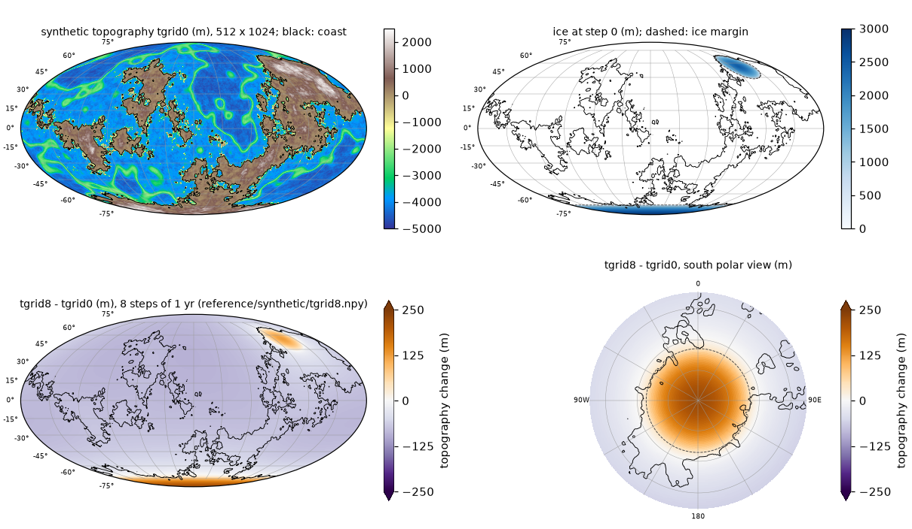

Verifying the installation¶
This page lists the checks you can run, which implementation each covers, and what a passing run prints.
| check | implementation covered | needs | time |
|---|---|---|---|
Python tests python tests/run_all.py |
Python solver | numpy (ducc0 optional) | about 3 s |
Fortran test bash tests/test_fortran_python.sh |
Fortran solver, against the Python solver | Fortran toolchain, numpy | about 30 s |
Non-uniform-step Fortran test bash tests/test_fortran_python_vardt.sh |
Fortran solver with a times file (non-uniform and uniform), against the Python solver | Fortran toolchain, numpy | about 2 min |
Fortran-only test bash tests/test_fortran_synthetic.sh |
Fortran solver and Fortran input generator, against a shipped reference | Fortran toolchain only (no Python) | about 30 s |
Benchmark reference check python tests/check_reference.py |
either solver, on a benchmark case | the benchmark data | 20-40 s per case |
Python tests¶
python tests/run_all.py
Five plain scripts (no pytest), all of the Python solver; the three below, and the two non-uniform-step tests of the next section:
test_recursion.py: synthetic modal spectrum (random decay rates and residues) and a random step-wise load history with non-uniform steps; the recursive update ofsolver.ExactMemoryis compared with the explicit history sum for the six viscous terms (relative error < 1e-12).test_sht_roundtrip.py: analysis -> synthesis round trip of a band-limited field on the 512 x 1024 grid at lmax 63 and 511, numpy backend and ducc0 if importable (relative error < 1e-12).test_small_case.py: idealised polar ice cap (up to 1000 m, 14 degrees radius, grown and melted over 8 steps of 1 kyr) on a sloping polar continent and a -4000 m ocean, 128 x 256 grid, lmax 63; the marine check removes the floating cap margin and the shoreline moves. It compares (a) the plain recursive solver, (b) the extrapolated inner start and (c) an explicit full-history evaluation of the viscous terms: (a) vs (c) must agree to < 1e-9 m; (a) vs (b) differ by the inner tolerance only. It also reports the fixed-point residual obtained by applying the ocean-load update once more to the converged iterate (information only: the convergence criterion of the solver, the ratio of Kendall et al. (2005) eq. 83, bounds the change of the coefficient sums between iterations, not this residual).
Expected output (numbers may differ in the last digits on other machines):
== test_recursion.py
test_recursion: 60 non-uniform steps (dt 1.9-1948.3 yr), lmax 12, up to 8 modes: max relative error 7.669e-15 (0.02 s)
test_recursion: PASS
== test_sht_roundtrip.py
...
test_sht_roundtrip: PASS
== test_small_case.py
...
test_small_case: (a) recursive vs (c) explicit history: max |diff| 4.547e-13 m (topography and radial displacement, all steps)
test_small_case: (a) plain vs (b) extrapolated start: max |diff| 7.352e-05 m (max |sea-level change| 205.3 m, ratio 3.6e-07; epsilon1 = 1e-05)
...
test_small_case: PASS
== test_extrap_formula.py
...
test_extrap_formula: PASS
== test_small_case_vardt.py
...
test_small_case_vardt: PASS
== 5/5 passed in 3.2 s
The difference of 7.4e-5 m between (a) and (b) is expected: the two inner iterations start from different first guesses and stop when the change between iterations falls below epsilon1 = 1e-5, so they agree to within that tolerance (a ratio of 3.6e-7 of the signal), not to round-off.
Non-uniform time steps (times file)¶
python tests/run_all.py also runs two tests of the non-uniform-step mode:
tests/test_extrap_formula.pyfeeds a known sequence of increments dS_i and step lengths dt_i (uniform: 1 yr; non-uniform: 1, 2, 5, 10, 20, 50, 100, 200, 37.5 yr) through the extrapolated inner start of both solvers (Pythonsolver_opt.extrap_guess; Fortranmodal_state_mod::extrap_coeffs, compiled when gfortran works, otherwise skipped with a message) and compares with dS0_j = dt_j [Sdot_(j-1) + (Sdot_(j-1) - Sdot_(j-2)) (dt_j + dt_(j-1)) / (dt_(j-1) + dt_(j-2))], Sdot_i = dS_i / dt_i, evaluated independently; equal steps must give exactly 2 dS_(j-1) - dS_(j-2).tests/test_small_case_vardt.pyruns the idealised polar ice cap oftest_small_case.pywith the steps 1, 2, 5, 10, 20, 50, 100, 200 yr from a times file and compares the recursive solver with an explicit full-history sum over the actual times (1e-9 m); it checks that the extrapolated start receives (dt_j, dt_(j-1), dt_(j-2)) from step 3 on, and that a uniform times file reproduces the run without one exactly.
test_extrap_formula: Python extrap_guess vs formula: max relative error 2.216e-16
test_extrap_formula: Fortran extrap_coeffs vs formula: max relative error 2.216e-16
test_extrap_formula: PASS
test_small_case_vardt: (a) recursive vs (c) explicit history: max |diff| 4.547e-13 m (topography and radial displacement, all steps; max |sea-level change| 68.5 m)
test_small_case_vardt: (d) uniform times file vs no times file: max |diff| (a) 0.0 m, (b) 0.0 m
test_small_case_vardt: PASS
bash tests/test_fortran_python_vardt.sh [WORKDIR] repeats the Fortran-Python comparison of
test_fortran_python.sh on the synthetic Earth (512 x 1024, 8 steps) with the steps 1, 2, 5, 10, 20,
50, 100, 200 yr from a times file. Fortran is built with DT unset and finds the file at
INPUT_FILES/others/times; Python gets --times. It also runs both solvers with a uniform times file
(t_k = k yr; Fortran through SLEVOLVE_TIMES=<file>) and without one. About two minutes.
(1) non-uniform steps: tgrid8 max |Fortran - Python| = 7.822e-11 m (max |topography change| 314.2 m; uniform 1-yr run 221.6 m; vardt - uniform run differ by 92.6 m)
(2) uniform times file vs no times file: Fortran max |diff| = 0.0 m, Python = 0.0 m (no times file, Fortran - Python 5.548e-11 m)
(3) Fortran OUTPUT_SLM/times (non-uniform): [0.0, 1.0, 3.0, 8.0, 18.0, 38.0, 88.0, 188.0, 388.0]
test_fortran_python_vardt: PASS
test_recursion.py sets the non-uniform step lengths through ExactMemory.set_dt, the per-step path
the solvers use with a times file, and checks that the decay factors equal exp(-s_k dt / 1000) exactly (zero difference).
Fortran test¶
conda activate slevolve-fortran # the toolchain of Installation
PYTHON=/path/to/envs/slevolve/bin/python bash tests/test_fortran_python.sh [WORKDIR]
The Fortran solver, checked against the Python solver on the synthetic Earth of the Quick start at full resolution. The script
- writes the synthetic case (
tools/make_synthetic_case.py: 512 x 1024 grid, an Earth-like random topography from a fixed seed, a polar and a mid-latitude ice sheet melting over 8 steps of 1 yr, Earth modelprem_512.l96C.ump3.lm1; see the Quick start) intoWORKDIR/INPUT_FILES(defaultWORKDIR:./slevolve_fortran_test); - builds the Fortran solver with the defaults and no
CASE, with the synthetic file names andNSTEPS=8, intofortran/build/fortran_test/; - runs it (
SLEVOLVE_INNER=extrap, 4 threads;THREADSto change) and the Python solver (run_ais.py --lmax 511 --inner extrap, with ducc0 and--opt allwhen available) on the same inputs; - compares the final topography
tgrid8of the two runs and prints PASS if they agree to 1e-9 m.
PYTHON selects the Python interpreter (default python3; it needs numpy). Expected output:
== synthetic case -> /path/to/slevolve_fortran_test/INPUT_FILES
seed 20261013: random topography (reference/synthetic/topography_seed.npy), two Vialov ice sheets
polar ice sheet: centre -90.0 N 0.0 E, radius 17.0 deg, H0 3000 m
mid-latitude ice sheet: centre 56.0 N 132.0 E, radius 12.0 deg, H0 2500 m
step: 0 1 2 3 4 5 6 7 8
polar ice (m): 3000 2625 2250 1875 1500 1125 750 375 0
mid-lat ice (m): 2500 2400 2150 1800 1350 900 500 200 0
wrote /path/to/slevolve_fortran_test/INPUT_FILES: grid 512x1024, land fraction 0.290, 9 ice files synth_ice_0..8, topography others/synth_topo.npy, earthmodel/prem_512.l96C.ump3.lm1
== Fortran build (CASE unset, NSTEPS=8, defaults)
built: /path/to/slevolve/fortran/build/fortran_test/exe (case=none driver=run_from_zero_plus sht=otf ...)
== Fortran run
== Python run
tgrid8: max |Fortran - Python| = 5.548e-11 m (max |topography change| 221.6 m)
test_fortran_python: PASS
The two codes run the same inner iterations (5, 5, 6, 6, 6, 5, 5, 5 per step) and agree to round-off (about 6e-11 m on a signal of 220 m).

The synthetic Earth at 512 x 1024 (top left: topography, black line: coast; top right: ice at step 0,
dashed: ice margin) and the reference result reference/synthetic/tgrid8.npy as the topography change
after 8 steps of 1 yr (bottom; colormap PuOr_r with fixed symmetric limits of +-250 m, the 99th
percentile of |change| (219 m) rounded up, arrows on the colour bar for values beyond; brown:
uplift under the melting ice, up to 222 m, mostly elastic after 8 yr; purple: the ocean floor
sinking relative to the rising sea surface). Drawn by
python tools/plot_reference.py --case synthetic.
Fortran-only test¶
bash tests/test_fortran_synthetic.sh [WORKDIR] # default WORKDIR: ./slevolve_fortran_synth
For users without Python. The Fortran solver and the Fortran input generator are checked against a reference result shipped with the code. The script
- builds the Fortran solver as the Fortran test does (no
CASE,NSTEPS=8, synthetic file names) intofortran/build/fortran_synth/, and with the same compiler the generatortools/make_synthetic_case.f90and the comparison programtests/npy_maxdiff.f90(both use the shipped.npyreader and writer,fortran/src/npy_io_mod.f90); - writes the synthetic Earth with the Fortran generator into
WORKDIR/INPUT_FILES. It reads the same topography seed as the Python generator (reference/synthetic/topography_seed.npy, built once in Python and rounded to whole millimetres), computes the same two ice sheets and writes identical.npyfiles (values rounded to whole millimetres); - runs 8 steps (
SLEVOLVE_INNER=extrap, 4 threads;THREADSto change); - compares
tgrid8withreference/synthetic/tgrid8.npy(computed with the Python solver,run_ais.py --lmax 511 --sht ducc --opt all --inner extrap, 4 threads, Apple M4 Max) and prints PASS if max |difference| < 1e-9 m.
The toolchain is taken from the environment as for fortran/build.sh (CONDA_ENV, FC,
FFTW_PREFIX, OPENBLAS_PREFIX, BLASLIB; Fortran without Python).
Expected output:
== Fortran build (CASE unset, NSTEPS=8, defaults)
built: /path/to/slevolve/fortran/build/fortran_synth/exe (case=none driver=run_from_zero_plus sht=otf ...)
== synthetic case (Fortran generator) -> /path/to/slevolve_fortran_synth/INPUT_FILES
seed 20261013: random topography (reference/synthetic/topography_seed.npy), two Vialov ice sheets
...
wrote /path/to/slevolve_fortran_synth/INPUT_FILES: grid 512x1024, land fraction 0.290, 9 ice files synth_ice_0..8, topography others/synth_topo.npy, earthmodel/prem_512.l96C.ump3.lm1
== Fortran run
== compare tgrid8 with reference/synthetic/tgrid8.npy
max |A - B| = 5.548E-11 m (tolerance 1.000E-09 m; max |B| 4899.9 m)
test_fortran_synthetic: PASS
On other hardware or BLAS libraries the round-off differs; a difference of up to about 1e-10 m is
still round-off (max |B| is the largest absolute value of the reference topography tgrid8.npy, not a change). A larger difference while the inner-iteration counts in RUN_fortran/OUTPUT_SLM/numiter are still
those listed above for the Fortran test (5, 5, 6, 6, 6, 5, 5, 5) points to a build problem.
Benchmark reference check¶
reference/ holds reference results of the three benchmark cases, computed with the Python solver
(ducc0 backend, --opt all --inner extrap, --lmax 511, 8 threads, Apple M4 Max).
tests/check_reference.py compares a run of either solver with them; it needs the prepared input data
of the case (Running the benchmark cases, which also shows maps of the reference
results).
reference/<case>.json: the area-weighted RMS and max |value| of each stored field, its value at 20 named sites, the number of inner iterations of every step and, for Cases 2 and 3, the outer misfit (area-weighted RMS of T_pred - T_obs) per pass.reference/<case>/*.npy: the full 512 x 1024 fields (<f8):
| Case | Fields | Selected steps |
|---|---|---|
| 1 | dtopo_k = topography change since step 0; dsl_k = relative sea-level change -(topography change) on the ocean of step k |
1, 100, 550 |
| 2 | dtopo_k = topography change since the start of the pass |
1, 600, 1200 |
| 3 | dtopo_p1_s50, dtopo_p5_s50 = topography change at step 50 of passes 1 and 5; T0_minus_obs = converged initial topography (pass 5) minus T_obs |
50 |
Check a finished run:
python tests/check_reference.py --case case1 --dir OUT_case1_py # Python run
python tests/check_reference.py --case case1 --dir RUN_case1/OUTPUT_SLM # Fortran run
python tests/check_reference.py --case case3 --dir OUT_case3_py --topo-pres $INPUT3/others/topo_pres
or let it run the reference configuration with the Python solver first and then compare:
python tests/check_reference.py --case case1 --run --input $INPUT1 --workdir RUN
It prints one line per quantity (max |difference| and area-weighted RMS difference of each full
field, the RMS and max summaries, the worst site, the inner-iteration counts, the outer misfits) and
ends with check_reference case1: PASS, or FAIL and the quantities that differ (exit status 1).
Reference fields whose files are not in the run directory are reported as SKIP and listed at the
end. The Fortran Case 1 example writes only tgrid0 (the initial topography snapshot) and tgrid550, so dtopo_550 and the iteration counts (from
OUTPUT_SLM/numiter) are compared; on the tested machine this gives dtopo_550 max |diff| 8.2e-12 m,
identical iteration counts (2099 in all) and check_reference case1: PASS, 5 item(s) skipped.
Tolerances. The default tolerance is 1e-6 m (--tol) for every field and summary, and identical
inner-iteration counts (--iter-slack 0). A rerun on the same machine reproduces every field exactly.
On other hardware, BLAS libraries or thread counts the round-off differs, a few steps may need one
inner iteration more or less, and the fields then differ within the inner tolerance; use
--tol 1e-3 --iter-slack 1 there.
Next: Running the benchmark cases.